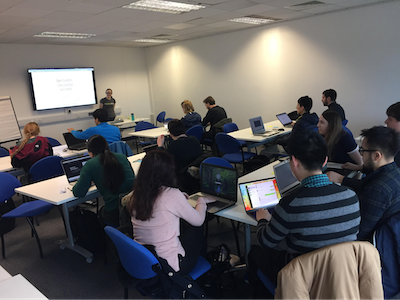

How to contribute to open source software
NB originally posted on the Software Sustainability Insittute (SSI) blog on 8 January 2019

By Becky Arnold, University of Sheffield.
On the 28th of November, Yo Yehudi of the Software Sustainability Institute and the University of Cambridge gave a half day workshop for researchers on how to contribute to open source software at the University of Sheffield. Many researchers make use of open source projects in their work. Also, in the course of conducting their own research many develop their own software which others in their field could potentially benefit from. Further, openly sharing software makes it much easier for researchers to check each other\'s results, which makes scientific outputs more reliable and reproducible. This workshop introduced researchers to what "open source" means, how to contribute to pre-existing open source projects, and how to start their own. Anna Krystalli of the University of Sheffield Research Software Engineering group also helped out at this event. The materials for this workshop are (openly) available here.
This workshop is part of a series I've organised as part of my Software Sustainability Institute Fellowship, and it kicked off with a discussion about various issues surrounding open source projects. These were drawn from a set of talking points available here.\ A topic that received much discussion was how to make your work open when it depends on sensitive or confidential data. The work of several researchers at the workshop fell into this category and they discussed their experiences. For some they were able to share their code with synthetic datasets. Without the original datasets results can never be fully reproduced, but still in this case the software can be checked and improved upon by others. This solution at least allows researchers in the same field to make use of each other\'s software, which saves valuable time by avoiding duplication of efforts.
Other attendees voiced frustration that they are unable to even share synthetic datasets, for fear that it could be used to reverse engineer or infer features of the original. Again, this makes research still less reproducible, but is simply unavoidable in some cases where the data is extremely sensitive. The consensus of the discussion can be summarised as "share what you can" because even if it's not everything, even if it's not much, it's still something.
Next, Yo gave an introduction to version control, specifically Git. She discussed how to add and commit changes, and the myriad benefits of using version control. She demonstrated how to use Github to setup a repository, put it online, and push and pull changes. Then it was the turn of attendees to set up their own and get some hands on practise. This was something people seemed to really, really enjoy, sending changes back and forth, reviewing and commenting on each others work, and generally getting a feel for the possibilities. Several attendees commented to me after the workshop finished on how useful they found this exercise.
To avoid language conflicts between attendees who worked in everything from Fortran and C++ to python and Matlab we primarily practiced using Github by making changes to Markdown files. Something that I wasn't previously aware of was how to use Markdown on Github to publish your own website, which is an extremely useful tip I'll be taking forwards.
Yo finished with a session on what makes an open source project good and how to get started contributing. She recommended looking for issues tagged as first-timers-only on GitHub or to visit firsttimersonly.com to build confidence. I really do think that giving people confidence is absolutely key: helping people to have the confidence to share their code, to ask questions, and to contribute to projects is fundamental for helping open source projects continue to flourish.